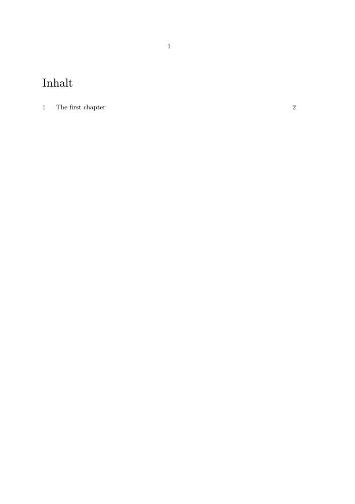

Syntax (autogenerated)
| \mainlanguage[...] | |
| [...] | language |
Syntax
| \mainlanguage[...] | |
| [...] | nl fr en uk de es cz ro.. |
Description
Set the language of auto-generated language elements, like the title of the table of contents or the appendix.
Example
To get the auto-generated language elements in German, use the parameter de or german. The example below places the table of contents.
-
\setuppapersize[A5] \mainlanguage[de] \starttext \completecontent \chapter{The first chapter} \stoptext
produces
- 
See also
- \language to change the language rules used for hyphenation and quotation.
- \setuplabeltext to alter some of a language's labels. (E.g. to change 'Section' to 'Lesson'.)
Help from ConTeXt-Mailinglist/Forum
All issues with: